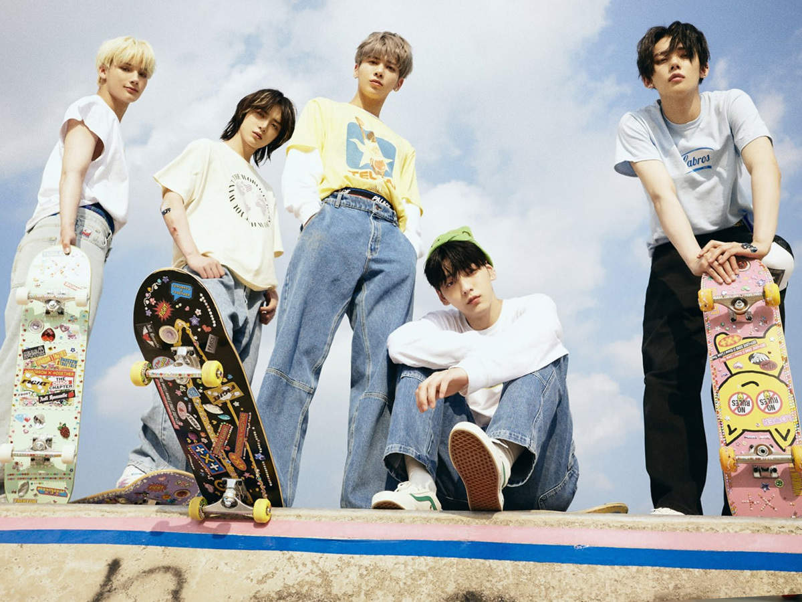

My Fav Songs are :
Butter by BTS [kpop boy band] is my most favourite song. It's my favourite song since it was the first time a Bts song had been released in a long time, and I was really enchanted by it. All of the armies would understand how important the song BUTTER is to us. The following are my favourite lyrics from the song: Smooth like (butter), cool shade (stunner) And you know we don't stop Hot like (summer), ain't no (bummer) You'll be like, "Oh my God" We gon' make you rock, and you say (yeah) We gon' make you bounce, and you say (yeah) Hotter? Sweeter! Cooler? Butter!

Magic by TOMORROW X TOGETHER [TXT] is truely magical..Just because of the music, I enjoy this song. This song's sound makes me happy. The following are some of my favourite lyrics from the song: I say everybody, clap your hands If you've got a broken heart, just take a chance (ooh) I say everybody, clap your hands If you've got a broken heart, just take a chance (chance) I say everybody, clap your hands If you've got a broken heart, just take a chance, say 
Mere Rabha is an excellent song created by RIshi Dev and Rukhsar Bandhukia. This song is from the RIMORAV VLOGS channel on YouTube, which symbolises RI VLOGS. This song is, really upbeat and delightful.
The following are some of my favourite lyrics from the song:
MERE RABBA, RABBA, RABBA
Haye ve mere, oh ve mere rabba
Kaisi yeh yaari,
Pyaar di bimaari,
Jehdi tu mainu laive
Kita e aukha ena,
Nah lage saukha jeena
Kya jaane tu judai ve
Heyy
BTS's song BOY WITH LUV [feat.hasley] is one of my favourites. Let me tell you why I like this song so much: I really enjoy the music and the words. This song's composition was fantastic. Of course, as a member of the army, I adore this song a lot.
The following are my favourite lines from the song:
Listen my my baby 나는
저 하늘을 높이 날고 있어
(그때 니가 내게 줬던 두 날개로)
이제 여긴 너무 높아
난 내 눈에 널 맞추고 싶어
Yeah you makin' me a boy with love